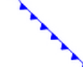
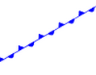

WKT Marks¶
The use of WKT marks (prefiex with “wkt://” in your SLD) allows an easy way to add complex symbols to the rendering process. Also there is the option of rendering marks built from WKT geometries; moreover, some Java-generated shapes can be used to draw meteorological symbols... hope the weathermen will find this useful.
Examples:
A double dashed line with transparent background can be shown with this SLD fragment:
<LineSymbolizer> <Stroke> <GraphicStroke> <Graphic> <Mark> <WellKnownName>wkt://MULTILINESTRING((-0.25 -0.25, -0.125 -0.25), (0.125 -0.25, 0.25 -0.25), (-0.25 0.25, -0.125 0.25), (0.125 0.25, 0.25 0.25))</WellKnownName> <Fill> <CssParameter name="fill">#0000ff</CssParameter> </Fill> <Stroke> <CssParameter name="stroke">#0000ff</CssParameter> <CssParameter name="stroke-width">1</CssParameter> </Stroke> </Mark> <Size>6</Size> </Graphic> </GraphicStroke> </Stroke> </LineSymbolizer>Which gives this output:

This module supports curves as well; for instance, this SLD fragment:
<LineSymbolizer> <Stroke> <GraphicStroke> <Graphic> <Mark> <WellKnownName>wkt://COMPOUNDCURVE((0 0, 0.25 0), CIRCULARSTRING(0.25 0, 0.5 0.5, 0.75 0), (0.75 0, 1 0))</WellKnownName> <Fill> <CssParameter name="fill">#0000ff</CssParameter> </Fill> <Stroke> <CssParameter name="stroke">#0000ff</CssParameter> <CssParameter name="stroke-width">1</CssParameter> </Stroke> </Mark> <Size>10</Size> </Graphic> </GraphicStroke> </Stroke> </LineSymbolizer>Produces this:

Property File Configuration¶
WKT shapes may be pooled in properties files (this file must be packed in the same JAR of this module) and re-used across SLD files, becoming libraries of symbols.
For instance the WKT marks defined in this properties files (wkt.properties):
ls=LINESTRING(0.0 0.25, 0.25 0.25, 0.5 0.75, 0.75 0.25, 1.00 0.25)
...
To reference the above property file in your SLD, prefixed like this (note the protocol changed to “wktlib://”):
<WellKnownName>wktlib://wkt.properties#ls</WellKnownName>
The location of the property file is either to be provided as an absolute path, or should be relative to a search root which can be programmatically set using WKTMarkFactory.setRoot(URL)
Weather symbols¶
The weather symbols, which are create using Java code, should be prefixed by the “extshape://” protocol in the SLD, are, for the time being, limited to the following
Triangle:
<WellKnownName>extshape://triangle</WellKnownName>
Produces:
Emicircle:
<WellKnownName>extshape://emicircle</WellKnownName>
Produces:

Triangle Emicircle:
<WellKnownName>extshape://triangleemicircle</WellKnownName>
Produces:
North Arrow:
<WellKnownName>extshape://narrow</WellKnownName>
Produces:
South Arrow:
<WellKnownName>extshape://sarrow</WellKnownName>
Produces:
More complex symbols like Wind Barbs can be created with the windbarbs:// prefix. This is an example:
<WellKnownName>windbarbs://default(15)[kts]</WellKnownName>
Where 15 indicates the wind intensity and [kts] indicates its unit of meausure.
And it produces: